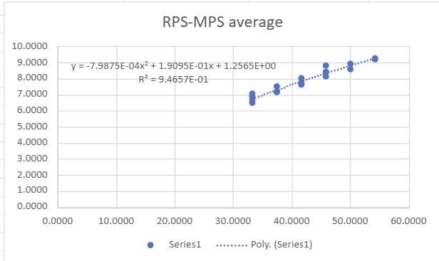
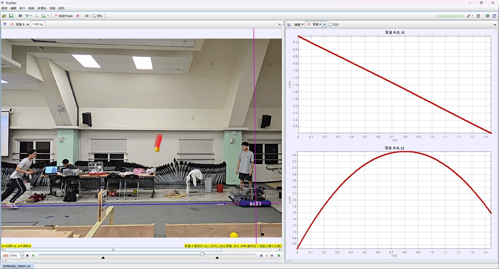
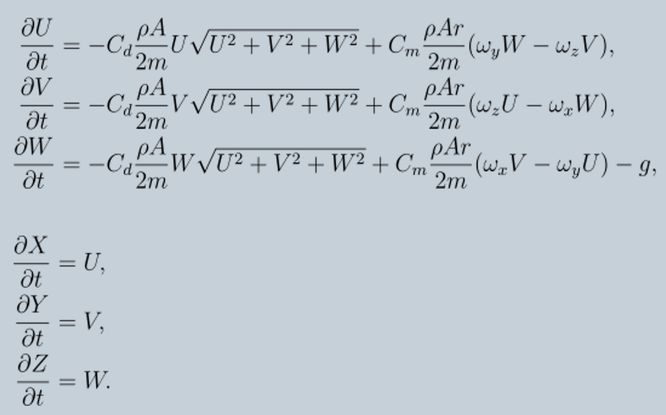
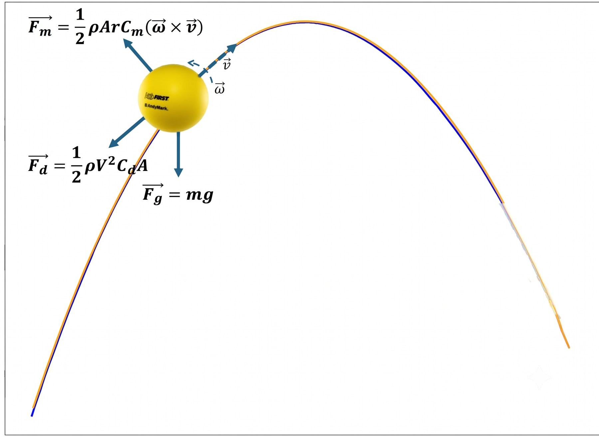
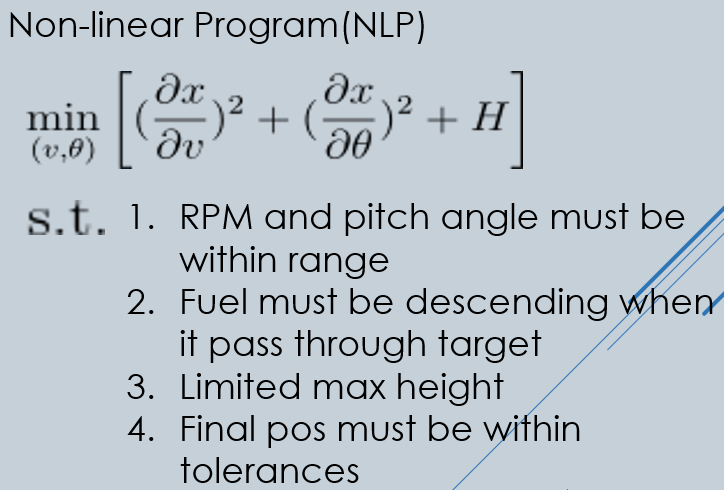
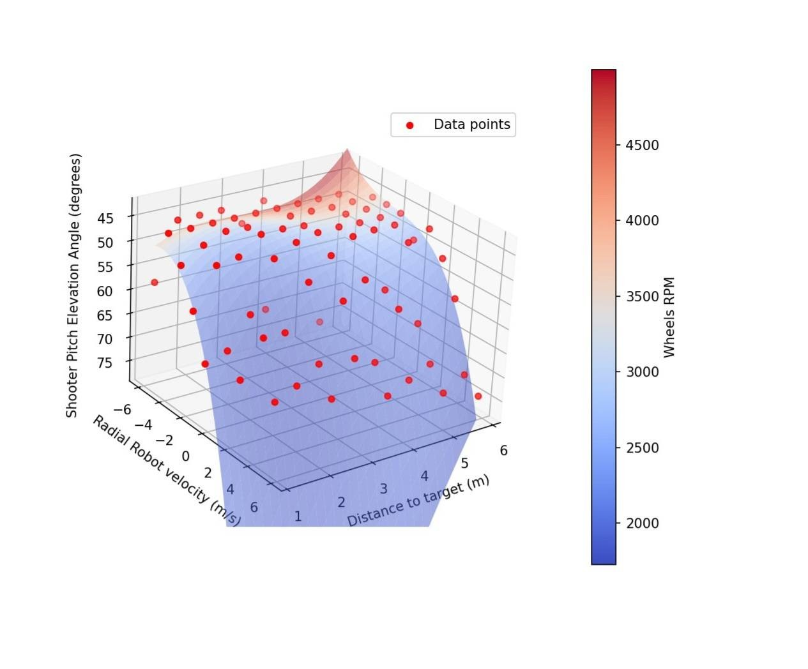
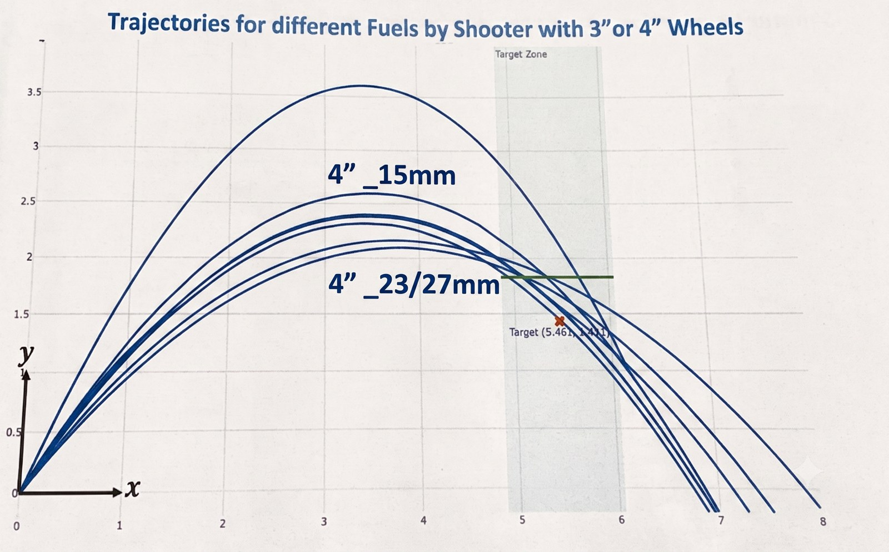

A moving robot changes the shot before the ball leaves the shooter. Our aiming system used robot position and velocity with a measured ballistics model to choose shooter and turret setpoints while driving.
The robot’s field position sets the target geometry, and its chassis velocity changes the required launch vector. A precomputed shot model supplies the flywheel and pitch targets. PID control moves the mechanisms, then a distance-based aiming tolerance gates the indexer.
Mechanism targetsTurret direction Shooter pitch Flywheel speed
→
PID + toleranceMove to setpoints Check aim readiness
→
IndexerFeed when ready
01 / CALIBRATE THE MODEL
Connect simulated ballistics to the real shooter
We modeled a fuel’s flight, then used 240 fps footage in Tracker to measure complete shot arcs. Real shots provided the relationship between flywheel speed and ball exit speed, fitted with a second-order regression. Comparing the measured paths with simulations also helped us correct model constants that initially came from approximate reference values.

Measured shooter speed to ball exit speed · Second-order regression used to bridge the simulation and robot.

Tracker view · A tracked shot with position plotted against time.
FLIGHT MODEL
Forces on the fuel
Our 3D model evolves the fuel’s velocity under aerodynamic drag, Magnus force, and gravity, then integrates velocity to update position. The early C-shooter model assumed zero fuel angular velocity.


Free-body diagram · Gravity, drag, and spin-dependent Magnus force shape the modeled flight.
HARD LIMITS
Keep solutions practical
Constrain flywheel speed and pitch to mechanism ranges, limit peak height, and require the fuel to descend through the target zone.
OBJECTIVE
Choose a robust path
The nonlinear program minimizes sensitivity to flywheel speed and pitch while penalizing excess trajectory height, subject to mechanism and shot constraints.

Nonlinear program · Objective and constraints from the team notes.
02 / RUN THE SOLUTION IN REAL TIME
Precompute trajectories, then look up setpoints
Solving every trajectory on the robot would add work to the control loop. We summarized simulation results in a third-order polynomial surface. Target distance and radial robot velocity select shooter pitch and wheel RPM; the robot then drives the turret and shooter toward those setpoints. The aim tolerance is based on a fixed distance at the target, so its angular allowance changes with range.

Precomputed shot surface · Distance and radial velocity map to pitch angle and wheel RPM.
03 / COMPENSATE FOR CHASSIS MOTION
Subtract robot velocity from the required shot vector
For a moving shot, the ball already carries the robot’s translational velocity when it leaves the shooter. We used vector subtraction to find the shooter-relative launch vector that produces the desired field-relative path. Representing the shot in three dimensions connects the solution to turret direction, shooter pitch, and wheel speed.
Vector subtraction · Visualizing how chassis motion changes the shooter-relative velocity needed for the shot.
Control sequence: The robot updates the shot targets, PID control moves the turret and shooter, and the indexer feeds fuel once the mechanism is inside its aiming tolerance.
04 / TEST AND ADAPT
Fuel compression changed the trajectory
Fuel stiffness varied between pieces and changed the ballistics. We used compression distance as a practical way to group the variation, then compared tracked trajectories for representative 15 mm and 23–27 mm compression groups. The goal was to find shot settings that reached the target across that spread.

Compression study · Fuel compressed by different amounts produced different flight paths.